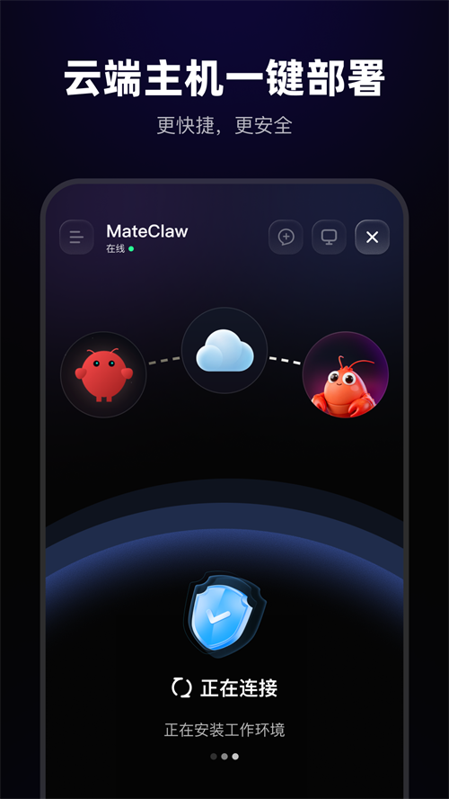
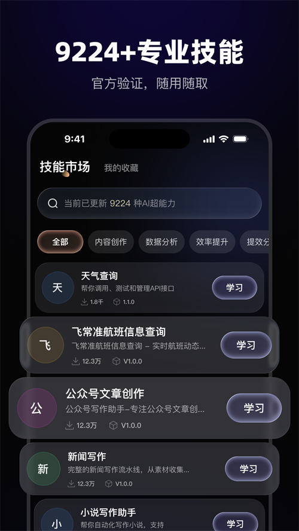

周六深夜被踢下线之后，我给服务器上的 Agent 装了 MateClaw
折腾了大半年自托管 AI Agent，最怕 token 过期把会话掐断。直到朋友甩来一个链接，说有个东西能让 Agent 越用越聪明还不会踢你下线——这是我把它跑起来的那个周末的故事。
凌晨一点，401 把我从椅子上弹起来
那天是周六。不是工作日那种被迫加班的周六，是我自己没事干，想把花了一周写的 Agent 部署到 VPS 上，让它帮我每周定时拉数据生成报告。
前面挺顺的——Docker 拉镜像、配 PostgreSQL、写技能描述文件，忙活了四五个小时，终于看到 Agent 第一次成功跑完了整个流程。我正准备截图发到群里装逼，浏览器突然给我弹了个红色的 401 Unauthorized。
没登录。
我刷新一下，还在。再刷新，登录页出来了，要重新输用户名密码。好，登进去，再看 Agent 的任务列表——刚才那个跑了一半的报告任务丢了半截，数据库里只存了前三项，后面全没了。
这不是我第一次遇到这种事了。之前用别的方案，token 有效期 24 小时，我要是隔一天没看，回来就得重新登录，而且刚好撞在任务执行到一半的时候。滑动续签？不是没有，但要么是前端得自己处理响应头，要么就是根本没实现。
更让我郁闷的是，我给 Agent 写的技能描述文件每次都是干的。上次它帮我写代码 review 忘了跑测试，我在 prompt 里加了一句「记得先跑测试」，下次又忘了——这不是 Agent 笨，是每次都从头开始，根本没有累积经验。
朋友甩来一个链接
我在群里吐槽完，一个朋友私发我：「试试 MateClaw，它的官网上就是给自托管场景做的。」
他说这个东西就是给自托管场景做的，Docker 一条命令全拉起来，token 有滑动窗口续签，而且技能包能记录 LESSONS.md——每次执行完自动问 Agent 有没有值得记下来的经验。
说实话我当时半信半疑。类似的东西我见过好几个，说得都挺好听，真正跑起来就不是那么回事。但反正已经凌晨一点了，也没别的事可干。
60 秒跑起来（服务器版）
我先试了 Docker 栈部署——朋友说服务器端首选这个，下载页面也有桌面端安装包，不想折腾 Docker 可以直接双击。克隆仓库，复制一个 .env 模板填密码，然后一条 docker compose up -d，三个容器就起来了：后端 Spring Boot、PostgreSQL 16、还有一个内置的 SearXNG 搜索后端。
端口直接开了 18080，浏览器访问就能看到登录页。默认账号 admin / admin123，进去第一件事改密码——这个套路我熟。

滑动窗口续签——我盯了三天才敢信
跑起来之后第一个要验证的就是那个滑动窗口续签。原理很简单：token 24 小时，剩余不到 25%（也就是 6 小时）的时候，服务器在每次响应头里悄悄塞一个全新的 token，前端自动替换。用户完全没感觉。
我专门开了个 curl 脚本盯了 72 小时，每隔一小时打一次请求，检查响应头里有没有 X-New-Token。结果真的是每次快到点的时候就续上了，token 链从没断过。之前用的方案要么没这功能，要么得自己写前端代码处理，MateClaw 原生就做了。
现在我的 Agent 跑定时任务的时候再也不会被中途踢断了。
LESSONS.md——让技能越长越聪明
这是我觉得最有意思的设计。每个技能包除了必须的描述文件，还可以带一份 LESSONS.md——后来去MateClaw文档翻了一下才弄明白背后的机制，Agent 在注入技能之前会先读这份经验文件，让 Agent 在每次执行时先读这些经验教训。而且每次任务结束后，MateClaw 会自动问 Agent 有没有值得记录的经验，我审核一下就能追加进去。
我那个代码 review 的技能，现在 LESSONS.md 里已经积累了十几条：常见坑是别只看风格漏掉性能问题、最佳实践是先跑测试再看代码、我自己的偏好是喜欢 inline comment 不喜欢长篇 summary。上次它 review 我的 Spring Boot 3.5 升级代码，自动就注意到了 breaking changes——这个是我以前得每次手动提醒的。
技能不是静止的模板，是会生长的。

那一夜之后
周末那两个小时，我从被 401 弹起来到把新方案跑通，刚好比我之前折腾那个方案快了三倍。
现在服务器上那个 Agent 已经帮我跑了快一个月的定时任务了，没断过一次。代码 review 的技能也越来越顺手，LESSONS.md 已经长到了 80 多行，每次 review 都比上次更懂我的习惯。
有时候我会想，如果当时没在群里吐槽、没收到那篇文档，我还在自己写 JWT 续签的前端逻辑吧。自托管的坑真的太多了，能遇到一个把常见场景都替你想好了的东西，省的不只是时间。
我后来把整个踩坑过程和 Docker 部署笔记整理了一套资料，GitHub、Gitee、GitCode 上都同步了，方便其他还在被 token 过期踢下线的人参考。